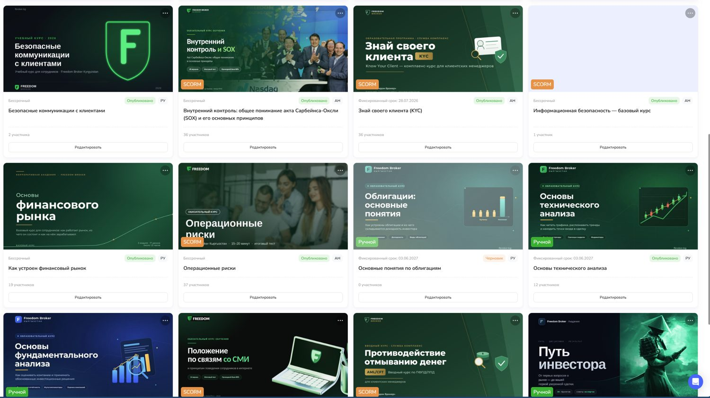
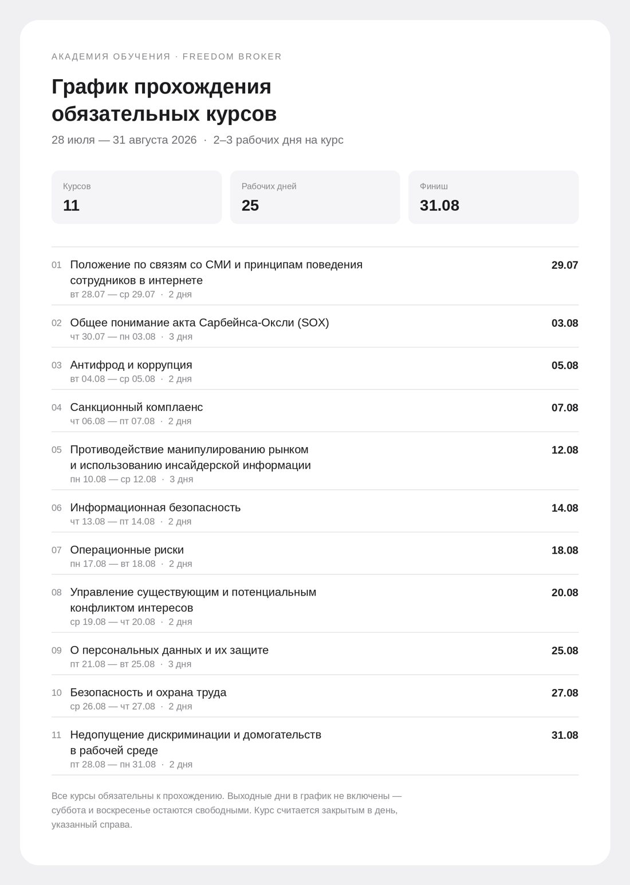

I build learning
functions from zero.
Four years, four companies, four times starting with nothing: no platform, no courses, no record of who knew what.
The brief
Freedom Broker Kyrgyzstan is a licensed broker inside Freedom Holding Corp. (NASDAQ: FRHC), running brokerage, dealer, trust management and virtual-asset exchange services.
When I joined as Head of Academy in April 2026 there was no learning function. No platform. No course library. No onboarding path. No record of who had been trained on what. Compliance training was a regulatory obligation with nothing behind it.
Below is what I built in the first four months, and the reasoning behind it. All of it is live and in use.
- 12+ courses published
- 11 mandatory courses sequenced across 25 working days
- 51 tracked items in the onboarding programme
- 7 functions with named responsibility
Platform and course library
I ran the platform work end to end: requirements, vendor evaluation, the procurement case, configuration, SCORM integration and rollout. The company runs on an AI-native LMS. Everything inside it is mine.
- A library of 12+ published courses in Russian and English, covering compliance, product knowledge and financial-market fundamentals.
- Mixed delivery: SCORM packages built in-house alongside native platform courses, so format follows content rather than tool.
- Enrolment, deadlines, scoring thresholds and completion tracking configured per course - the audit trail compliance needs, and the visibility department heads asked for.
Formal standing
I also wrote the Academy's governing document - thirteen chapters covering structure, functions, training and attestation procedure, KPI and reporting.
A learning function without internal regulation behind it is a service desk. With it, the Academy has authority to set standards rather than fulfil requests.

Sequencing the compliance programme
Eleven mandatory courses had to be completed company-wide. The usual approach is to release them together and chase people until the deadline.
I sequenced them instead. One course at a time, two to three working days each, weekends excluded, a fixed close date per course, spread across 25 working days.
Why it matters
Staggering removes the collision between training and the working day. Non-completion becomes visible on day three rather than at the deadline. And compliance gets a defensible record of when each obligation was met, course by course.

Sales manager onboarding
A five-week path from first day to independent work on the line. 25 working days, 51 tracked items, blended across courses, self-study, briefings, meetings and mandatory practice with a mentor on a demo account.
Every item carries a named learning outcome and an owner. Nothing sits in the programme as "read this" - each line specifies what the person must be able to do, who checks it, and on which day.
Contracts, equipment, platform and CRM access, the holding and the local entity, regulation and investor protection, role KPI and compensation, code of ethics.
Market structure, world exchanges, equities, bonds, ETFs, IPO, options, investment risk, finance fundamentals, technical and fundamental analysis.
Brokerage account, savings sub-account, trust management, tariffs, platform navigation, opening a client account end to end, demo portfolios, order types, account security.
Tone of voice, call structure, five inbound and outbound scripts, complaint handling, response standards, needs discovery, objections, cross-sell and closing, prohibited phrases.
Risk disclaimer, personal data and client verification, anti-fraud, IT security, mandatory group compliance courses, satisfaction survey, individual development plan.
Rising thresholds, not one exam
Six checkpoints instead of a single test at the end. Market fundamentals at 80% on day 10. Products and platform at 80% on day 15. Service and sales at 85% on day 20. Then a three-scenario role-play, a mentor sign-off based on supervised live calls, and a final joint approval by mentor and department head.
Seven owners, written down
Employee, mentor, department head, L&D, Compliance, IT and HR each have defined responsibilities in the document.
This was deliberate. A programme that only L&D owns is one that quietly stops running the moment L&D is busy.
Building content with AI
I produce e-learning in-house rather than buying it or briefing an agency. SCORM courses are built with AI tooling and Figma, which is what makes a library this size possible for a function this small.
Turnaround on a new mandatory course went from a procurement cycle to a production task, and the content stays accurate to our own regulation rather than a vendor's generic version.
- Where AI earns its place: drafting from source material such as internal policy and regulation, restructuring dense legal text into learnable sequences, generating scenario variants and assessment items.
- Where it does not: deciding what the learning outcome is, what a person must be able to do afterwards, where the threshold sits, and whether a course should exist at all.
Earlier results
How I work
- I start from the business signal, not the request. A department head asking for "a sales training" is describing a symptom.
- I write down who owns what. Most learning programmes decay because responsibility sits with one function.
- I build rather than brief. It keeps the feedback loop short and the material accurate.
- I would rather have one number that holds up than a dashboard that does not. Completion rates are not impact.
Get in touch
Currently Head of Academy at Freedom Broker Kyrgyzstan. Open to L&D lead roles in Europe, with relocation.